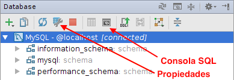
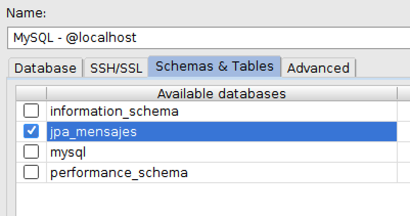
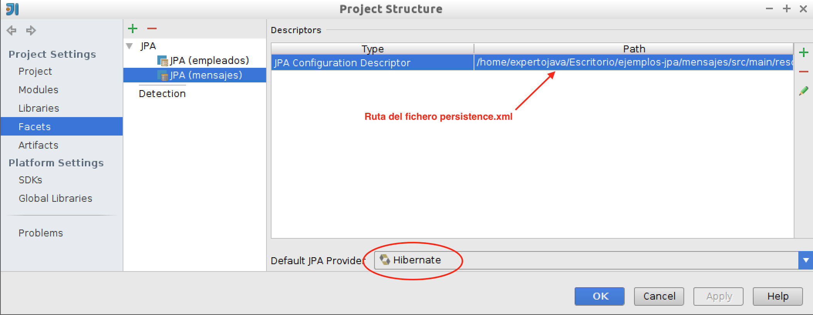
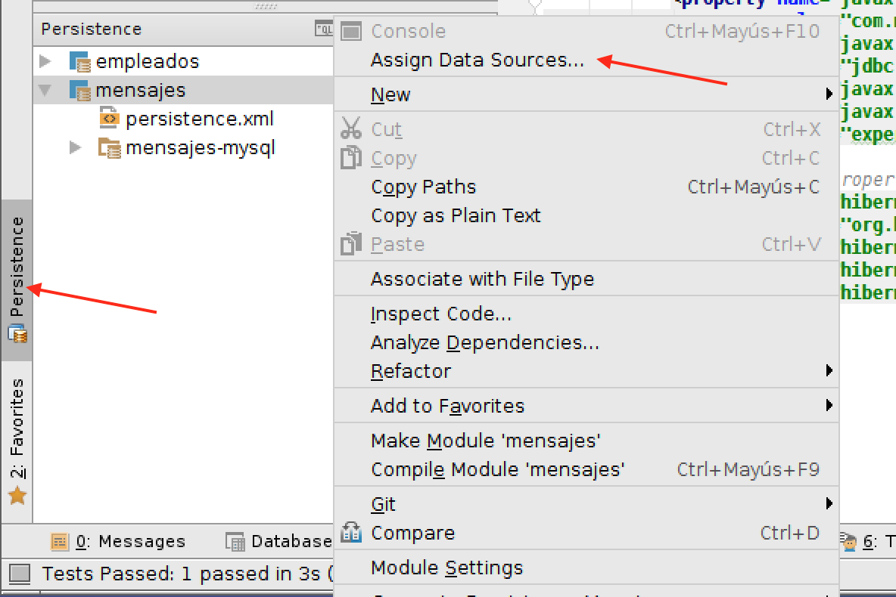
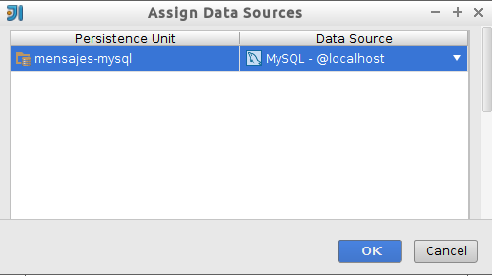
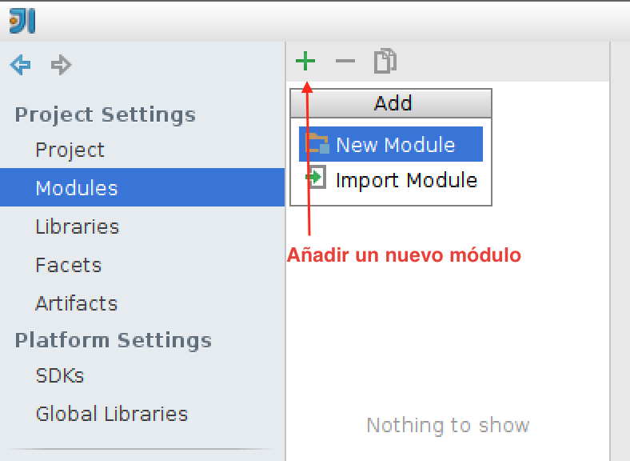

1. Primer contacto con JPA
1.1. Introducción a JPA
En la primera sesión del módulo de Java Persistence API (JPA) vamos a tratar una introducción a esta nueva tecnología Java que permite trabajar con entidades persistentes conectadas a una base de datos. Introduciremos los conceptos principales de JPA que iremos desarrollando en posteriores sesiones y proporcionaremos un ejemplo completo en el que describiremos la instalación básica de JPA en aplicaciones Java standalone (Java SE) usando Maven, IntelliJ IDEA como entorno de desarrollo y Hibernate como implementación de JPA. Veremos por último cómo realizar tests en los que intervienen el acceso a una base de datos usando DbUnit. Este ejemplo será la base de algunos ejercicios de la sesión.
Entre los conceptos principales que trataremos sobre JPA destacamos los siguientes:
-
uso de anotaciones para especificar propiedades
-
entidades persistentes y relaciones entre entidades
-
mapeado objeto-relacional
-
gestión de contextos de persistencia y de transacciones
-
diferencias entre JPA gestionado por la aplicación y gestionado por el contenedor
-
lenguaje de queries
Estudiaremos estos conceptos en profundidad a lo largo del módulo. En la sesión de hoy realizaremos una introducción basándonos en un ejemplo práctico.
1.1.1. Los orígenes de JPA
JPA (Java Persistence API) tiene su origen en el framework Hibernate, un conjunto de librerías que implementan un mapeado ORM (Mapeado Objeto-Relacional) desarrollado por Gavin King y un grupo de colaboradores a finales de 2001. Al principio Hibernate no era parte del estándar Java soportado por Sun, sino que se desarrolló de forma independiente como un proyecto Java open source. Pronto ganó popularidad y aceptación. El grupo de desarrolladores fue contratado por JBoss, integrando el producto en el servidor de aplicaciones de la compañía. En la actualidad JBoss ha sido adquirido por RedHat, que ha incorporado el servidor de aplicaciones en algunas de sus distribuciones de Linux y Gavin King continua trabajando allí.
En paralelo al desarrollo y popularización de Hibernate, la especificación oficial de Java EE también intentó definir entidades persistentes. En concreto, se definieron los entity beans, un tipo de componentes EJB distribuidos gestionados por contenedores. Junto a ellos, Sun también apoyó la especificación de JDO (Java Data Objects), otro framework alternativo de gestión de entidades persistentes que no requiere el uso de contenedores EJB. Ninguno de los dos frameworks tuvo demasiado éxito. Los EJB de entidad siempre fueron denostados por ser muy poco eficientes y complejos de utilizar. JDO, por otra parte, tardó bastante en ser implementado de una forma robusta y sencilla de manejar.
En este contexto se creó en mayo de 2003 el grupo de trabajo que iba a definir la siguiente especificación de EJB (EJB 3.0). Sun propuso a Gavin King formar parte del grupo. Cuando llegó el momento de decidir el modelo de gestión de entidades persistentes se decidió apostar por la solución que ya había adoptado de hecho la comunidad: el enfoque basado en POJOs de Hibernate. Tras tres años de trabajo, en abril de 2006 se realizó la votación que apruebó la nueva especificación y ésta se incorporó a la especificación oficial de Java EE 5 con el nombre de JPA. En declaraciones de Gavin King, la especificación de JPA recoge el 95% de las funcionalidades de Hibernate. Desde entonces JPA como estándar e Hibernate como implementación han ido evolucionando de la mano en las posteriores especificaciones Java EE6 y Java EE 7.
1.1.2. Java Persistence API
Java Persistence API (JPA) es la tecnología estándar de Java para gestionar entidades persistentes que se incluye en Java EE desde la versión 5. La versión 1.0 de la especificación se concluyó en mayo de 2006, como parte de Java EE 5. La versión 2.0 fue lanzada en diciembre de 2009, junto con Java EE 6. La versión 2.1 fue lanzada en abril de 2013, junto con Java EE 7.
La descripción oficial de la última versión del estándar está definida en el JSR 338 en el que se especifica la versión 2.1 de JPA. Como la mayoría de los documentos que especifican las JSR, es un documento bastante legible, muy bien estructurado, muy conciso y con bastante ejemplos. Además, por ser la especificación original, es completo. Cualquier característica de JPA debe estar reflejada en este documento. Aconsejamos, por tanto, tenerlo a mano, echearle un vistazo inicial (después de haber leído los apuntes de este módulo, por supuesto) y utilices como referencia ante dudas serias.
Es posible utilizar JPA no sólo como parte de aplicaciones Java EE que corren en un servidor de aplicaciones, sino también como una librería de acceso a datos en una aplicación Java aislada (standalone). Lo haremos así en esta primera sesión de la asignatura.
La idea de trabajar con entidades persistentes ha estado presente en la Programación Orientada a Objetos desde sus comienzos. Este enfoque intenta aplicar las ideas de la POO a las bases de datos, de forma que las clases y los objetos de una aplicación puedan ser almacenados, modificados y buscados de forma eficiente en unidades de persistencia. Sin embargo, aunque desde comienzos de los 80 hubo aplicaciones que implementaban bases de datos orientadas a objetos de forma nativa, la idea nunca terminó de cuajar. La tecnología dominante en lo referente a bases de datos siempre han sido los sistemas de gestión de bases de datos relacionales (RDBMS). De ahí que la solución propuesta por muchas tecnologías para conseguir entidades persistentes haya sido realizar un mapeado del modelo de objetos al modelo relacional. JPA es una de estas tecnologías. El motor de JPA realiza una transformación en tiempo de compilación de las clases Java a tablas de la base de datos y viceversa. El framework también debe realizar transformaciones en tiempo de ejecución, convirtiendo actualizaciones y consultas realizadas sobre clases y objetos en sentencias SQL que ejecuta sobre la base de datos.
Una de las características principales de JPA es su simplicidad. JPA utiliza anotaciones y configuración por defecto, de forma que el desarrollador sólo tiene que especificar aquellas características que necesita que sean distintas de las de por defecto. Por ejemplo, JPA mapea una clase Java con una tabla de la base de datos usando la anotación @Entity. Por defecto el nombre de la tabla coincidirá con el nombre de la clase. Ahora bien, podemos modificar ese nombre utilizando anotaciones adicionales. En este caso table(name="nombre-de-tabla").
JPA permite realizar el mapeo entre el esquema de datos y las clases Java de dos formas. Una es partir de un esquema de datos ya existente y construir las clases Java a partir de él. La otra es hacerlo al revés, definir las relaciones entre las clases Java mediante anotaciones y generar el esquema de la base de datos a partir de ellas. Para un proyecto nuevo es recomendable utilizar este último enfoque, ya que el modelo de clases es más restrictivo que los esquemas SQL y si lo hacemos al revés podemos encontrar algunas relaciones en SQL difíciles de expresar con JPA.
Las distintas versiones de JPA han ido haciendo cada vez más potente esta tecnología. Por ejemplo, JPA 2.0 incluyó:
-
Extensión de las opciones del mapeo objeto-relacional
-
Soporte para colecciones de objetos embebidos
-
Listas ordenadas
-
Combinación de tipos de acceso
-
API Criteria para la construcción de consultas
-
Metadata adicional para la generación de DDL (Data Definition Language)
-
Soporte para validación
-
Soporte para cache de objetos compartidos
Y la última especificación JPA 2.1 ha incluido:
-
Conversores que permiten customizar el código de conversión entre los tipos de las clases java y los de la base de datos
-
Actualizaciones y borrados en bloque mediante el API Criteria
-
Consultas que ejecutan procedimientos almacenados en la base de datos
-
Generación del esquema
-
Grafos de entidades que permiten la recuperación o la mezcla parcial de objetos en memoria
-
Mejoras en el lenguaje de consultas JPQL/Criteria: subconsultas aritméticas, funciones genéricas de base de datos, cláusula
Join ON
1.1.3. Implementaciones de JPA
JPA es un estándar aprobado en un JSR que necesita ser implementado por desarrolladores o empresas. Al ser una especificación incluida en Java EE cualquier servidor de aplicaciones compatible con Java EE debe proporcionar una implementación de este estándar.
Sólo las implementaciones más avanzadas han implementado a fecha de hoy la última versión 2.1 de la especificación. Las implementaciones más populares son:
-
Hibernate (JPA 2.1, usado por JBoss/WildFly - RedHat)
-
EclipseLink (JPA 2.1, usado por GlassFish - Oracle)
-
OpenJPA (JPA 2.0)
Vamos a usar la implementación de Hibernate, que es la utilizada en el servidor de aplicaciones WildFly y JBoss de RedHat. La gran aceptación de Hibernate en la comunidad de desarrolladores Java se refleja en que en la actualidad hay muchas empresas que utilizan Hibernate como capa de persistencia y no han dado todavía el salto a JPA. Es previsible que lo hagan próximamente.
1.1.4. Para saber más
Las siguientes referencias proporcionan un complemento en profundidad de los conceptos vistos en estos apuntes:
-
Documentación de Hibernate: Documentación en profundidad de Hibernate y JPA que incluye la documentación de la versión 4.3.7 Final que es compatible con JPA 2.1.
-
Especificación JPA 2.1. Documento que especifica el estándar JPA 2.1. Contiene bastante código de ejemplo y no es difícil de leer.
-
Java Persistence with Hibernate, second edition: Christian Bauer y Gavin King. Ed. Manning, 2015. Libro de referencia de JPA (2.1), con numerosos ejemplos tanto del estándar como de la implementación de Hibernate.
1.2. Ejemplo práctico: una sencilla aplicación JPA
Vamos a presentar un primer ejemplo de aplicación JPA, que nos va a servir para introducir los conceptos principales de la librería. El ejemplo es muy sencillo, unos programas Java (aplicaciones standalone Java SE) que gestionan mensajes creados por autores. En la siguiente sesión implementaremos una sencilla versión web y explicaremos cómo utilizar JPA en aplicaciones web Java EE.
Definimos dos entidades JPA, Autor y Mensaje que se deben mapear con dos tablas de la base de datos. Deberemos representar la relación uno-a-muchos entre autor y mensajes. Un autor va a estar relacionado con todos los mensajes que ha creado. Todos los mensajes tendrán obligatoriamente un autor. Las entidades tendrán la siguiente información:
La entidad Autor almacena información de los autores de los mensajes:
-
Long id: identificador del autor -
String correo: correo electrónico del autor, que funcionará también como identificador -
String nombre: nombre del autor -
Set<Mensaje> mensajes: conjunto de mensajes que ha creado el autor
La entidad Mensaje almacena la siguiente información:
-
Long id: identificador del mensaje -
Integer num: número de mensaje del autor -
String texto: texto del mensaje -
Date fecha: fecha de creación del mensaje -
Autor autor: autor del mensaje
Al definir esta relación en JPA se realizará automáticamente un mapeo de estas entidades en dos tablas en la base de datos: Autores y Mensajes:
La tabla Autores contiene las siguientes columnas:
-
autor_id bigint not null: clave primaria de la tabla, autoincrementada -
correo varchar(255) not null -
nombre varchar(255): nombre
La tabla Mensajes contiene las siguientes columnas:
-
mensaje_id bigint not null: clave primaria de la tabla, autoincrementada -
texto varchar(255) not null -
fecha datetime -
autor bigint not null: autor del mensaje, clave ajena que apunta a la columna email de la tabla de autores
La siguiente figura muestra gráficamente las clases Java (entidades) y las tablas asociadas:
A continuación vamos a crear paso a paso todos los elementos del proyecto. Definiremos también algunos programas ejemplo para ilustrar el funcionamiento de distintos usos de JPA: creación de entidades, modificación, borrado y consulta. Todo ello en el proyecto llamado mensajes.
1.2.1. Configuración del proyecto Maven
| Para entregar los ejercicios de la asignatura tienes que crear todos los proyectos en un único repositorio git que mantendrás sincronizado con Bitbucket. Para eso deberás hacer un fork del proyecto principal en el que se guardarán todos los subproyectos (módulos en la terminología de IntelliJ). En el apartado de ejercicios comentaremos paso a paso cómo hacerlo. |
Este primer subproyecto (o módulo) lo crearemos con las siguientes coordenadas Maven:
-
groupId:
org.expertojava.jpa -
artifactId:
mensajes -
packaging:
jar -
name:
mensajes
Las librerías necesarias para trabajar con Maven se pueden comprobar en el fichero POM del proyecto. Todas las versiones de todas las dependencias están actualizadas a la última versión disponible.
<?xml version="1.0" encoding="UTF-8"?>
<project xmlns="http://maven.apache.org/POM/4.0.0"
xmlns:xsi="http://www.w3.org/2001/XMLSchema-instance"
xsi:schemaLocation="http://maven.apache.org/POM/4.0.0 http://maven.apache.org/xsd/maven-4.0.0.xsd">
<modelVersion>4.0.0</modelVersion>
<groupId>org.expertojava.jpa</groupId>
<artifactId>mensajes</artifactId>
<version>1.0-SNAPSHOT</version>
<packaging>jar</packaging>
<name>mensajes</name>
<properties>
<project.build.sourceEncoding>UTF-8</project.build.sourceEncoding>
</properties>
<dependencies>
<!-- Hibernate JPA --> (1)
<dependency>
<groupId>org.hibernate.javax.persistence</groupId>
<artifactId>hibernate-jpa-2.1-api</artifactId>
<version>1.0.0.Final</version>
</dependency>
<dependency>
<groupId>org.hibernate</groupId>
<artifactId>hibernate-entitymanager</artifactId>
<version>4.3.7.Final</version>
</dependency>
<!-- DbUnit --> (2)
<dependency>
<groupId>org.dbunit</groupId>
<artifactId>dbunit</artifactId>
<version>2.5.0</version>
</dependency>
<!-- Driver MySQL --> (3)
<dependency>
<groupId>mysql</groupId>
<artifactId>mysql-connector-java</artifactId>
<version>5.1.33</version>
</dependency>
<!-- Logging --> (4)
<dependency>
<groupId>org.slf4j</groupId>
<artifactId>slf4j-simple</artifactId>
<version>1.7.12</version>
</dependency>
<dependency>
<groupId>log4j</groupId>
<artifactId>log4j</artifactId>
<version>1.2.17</version>
</dependency>
<dependency>
<groupId>commons-logging</groupId>
<artifactId>commons-logging</artifactId>
<version>1.2</version>
</dependency>
<!-- Hibernate validator --> (5)
<dependency>
<groupId>org.hibernate</groupId>
<artifactId>hibernate-validator</artifactId>
<version>5.1.3.Final</version>
</dependency>
<dependency>
<groupId>javax.el</groupId>
<artifactId>javax.el-api</artifactId>
<version>2.2.4</version>
</dependency>
<dependency>
<groupId>org.glassfish.web</groupId>
<artifactId>el-impl</artifactId>
<version>2.2</version>
</dependency>
</dependencies>
</dependencies>
<build>
<finalName>${project.name}</finalName>
<plugins>
<plugin>
<groupId>org.apache.maven.plugins</groupId>
<artifactId>maven-compiler-plugin</artifactId>
<version>3.1</version>
<configuration>
<source>1.7</source>
<target>1.7</target>
</configuration>
</plugin>
</plugins>
</build>
</project>| 1 | Hibernate JPA: librerías para usar Hibernate como una implementación de JPA y librería de log slf4j-api necesaria para Hibernate. |
| 2 | DbUnit: librería dbunit:2.5.0, carga automáticamente la librería junit:4.11 que necesita. |
| 3 | Driver MySQL para acceder a la base de datos MySQL desde JPA y desde DbUnit. |
| 4 | Hibernate necesita el fichero de logging slf4j-simple.jar, sobre el que definimos una configuración de logging basada en log4j. |
| 5 | Hibernate validator implementa la validación Bean Validation de las clases entidad. |
En la siguiente imagen se muestran todas las librerías que finalmente se descarga Maven. Son librerías necesarias para que las anteriores librerías puedan funcionar:
En la pestaña Dependency Hierarchy del POM podemos explorar las relaciones entre las distintas librerías.
1.2.2. Configuración de la conexión a la BD de IntelliJ
JPA puede trabajar con cualquier gestor de bases de datos. En nuestro caso, hemos instalado en la máquina virtual el servidor MySQL configurado con el usuario root y la contraseña expertojava.
IntelliJ tiene un conjunto de herramientas muy útiles para trabajar con bases de datos. Se accede a ellas desde el panel Database situado en el lateral derecho:
-
Abre el panel Database en la parte derecha.
-
Crea una nueva conexión con la base de datos MySQL con la opción + > Data Source > MySQL
-
Inicializa los parámetros de la conexión, sólo tienes que indicar el usuario
rooty la contraseñaexpertojava. Aparecerá también un aviso indicando que no está descargado el driver de acceso a MySQL, pincha el enlace y lo descargará e instalará.
Una vez configurada la conexión, vamos a utilizarla para crear la base de datos
jpa_mensajesque vamos a utilizar en las primeras aplicaciones ejemplo que vamos a programar con JPA. En el panel de base de datos podremos ver un desplegable con las bases de datos existentes. Para crear la nueva base de datos abre la consola SQL pulsando el icono correspondiente del panel de base de datos:Y ejecuta el comando:
CREATE DATABASE jpa_mensajes;Verás que se ha creado una base de datos con ese nombre bajo las ya existentes por defecto en MySQL. Con esto es suficiente para que podamos empezar a trabajar con JPA.
-
Por último, para que aparezca la base de datos recién creada bajo el icono de la fuente de datos MySQL es necesario seleccionarla en la pantalla de propiedades. Pulsa en el botón de propiedades de la fuente de datos (o selecciona con el botón derecho la opcion Properties) y entrarás en la ventana de configuración de la fuente de datos. Selecciona la pestaña Schemas & Tables y escoge la base de datos
jpa_mensajes:Ahora ya podrás ver la base de datos (por ahora sin ninguna tabla) bajo el icono de la conexión a la fuente de datos:

Otra forma de crear la base de datos es hacerlo desde línea de comando:
$ echo "CREATE DATABASE jpa_mensajes" > create.sql
$ mysql -u root -p"expertojava" < create.sql1.2.3. Clases entidad
Las clases de entidad (entity classes) se codifican como clases Java con campos, getters, setters y con los métodos equals y hashcode basados en claves propias naturales a los que se añaden anotaciones JPA para especificar el mapeado con las tablas correspondientes de la base de datos. Vamos a ver un primer ejemplo con las clases Autor y Mensaje y la relación una-a-muchos definida entre ellos. En las sesiones siguientes entraremos más a fondo a explicar las distintas anotaciones.
Autor
Veamos la primera clase, Autor, que contiene alguna información sobre los autores que escriben los mensajes.
Debemos etiquetar la clase con la anotación @Entity para indicarle a JPA que se debe mapear con una tabla. Todos los atributos de la entidad se mapearán automáticamente con columnas de la tabla SQL. En esos atributos podemos añadir otras anotaciones que permiten configurar las distintas características de las columnas SQL. Estas anotaciones se pueden definir sobre el atributo o sobre los métodos getters. Una forma curiosa de organizar la estructura de una clase entidad es la que utilizan en la documentación de Hibernate, en la que agrupan atributo, getter y setter.
Definimos la clase en la paquete org.expertojava.jpa.mensajes.modelo:
package org.expertojava.jpa.mensajes.modelo;
import javax.persistence.*;
import java.util.HashSet;
import java.util.Set;
@Entity (1)
public class Autor {
@Id (2)
@GeneratedValue (3)
@Column(name = "autor_id") (4)
Long id;
@Column(name="email", nullable = false, unique = true) (5)
private String correo;
private String nombre; (6)
@OneToMany(mappedBy = "autor", cascade = CascadeType.ALL, fetch = FetchType.EAGER) (7)
private Set<Mensaje> mensajes = new HashSet<Mensaje>();
@Version (8)
private int version;
public Long getId() { return id; }
private void setId(Long id) { this.id = id; }
public String getCorreo() { return correo; }
public void setCorreo(String correo) { this.correo = correo; }
public String getNombre() { return nombre; }
public void setNombre(String nombre) { this.nombre = nombre; }
public Set<Mensaje> getMensajes() { return mensajes; }
public void setMensajes(Set<Mensaje> mensajes) { this.mensajes = mensajes; }
public Autor() { (9)
}
public Autor(String nombre, String correo) {
this.nombre = nombre;
this.correo = correo;
}
@Override
public boolean equals(Object o) { (10)
if (this == o) return true;
if (o == null || getClass() != o.getClass()) return false;
Autor autor = (Autor) o;
return !(id != null ? !id.equals(autor.id) : autor.id != null);
}
@Override
public int hashCode() {
return id != null ? id.hashCode() : 0;
}
@Override
public String toString() {
return "Autor{" +
"id=" + id +
", correo='" + correo + '\'' +
", nombre='" + nombre + '\'' +
", mensajes=" + mensajes +
'}';
}
}| 1 | @Entity: La clase es una entidad que se va a mapear con una tabla de la base de datos. Los campos de la clase se mapearán con columnas de la base de datos. Por defecto el nombre de la tabla será el nombre de la clase Java. Se puede modificar usando la anotación @Table. |
| 2 | @Id: indica que el campo anotado (en nuestro caso Long id) va a ser el identificador de la entidad. La columna con la que se mapea en la base de datos es la clave primaria de la tabla. |
| 3 | @GeneratedValue: El identificador se genera automáticamente por parte de la base de datos cuando la entidad se hace persistente. |
| 4 | @Column: Sirve para indicar características del esquema de la columna en la que se mapea el campo. El elemento name sirve para indicar el nombre de la columna en el mapeo. Si no estuviera, con un una columna con el nombre del atributo de la clase Java. |
| 5 | En este caso, obligamos a que no la columna no sea null. Veremos que la columna correo de la tabla tendrá el modificador NOT NULL. |
| 6 | Todos los atributos se mapean con campos de la tabla. En el caso de no utilizar la anotación @Column se mapea con un campo con el mismo nombre que el atributo. |
| 7 | @OneToMany: Sirve para definir una relación uno-a-muchos entre Autor y Mensaje. La anotación cascade indica que las acciones de borrado, persist y merge se propagan en cascada a los mensajes. La anotación @mappedBy indica el atributo que define la clave ajena en el otro lado de la relación. Y la anotación EAGER indica que traeremos a memoria todos los mensajes con los que está relacionado el autor. Los veremos más adelante. |
| 8 | @Version: Un atributo versión que usa JPA para implementar la gestión optimista de la concurrencia. Lo veremos en la última sesión. |
| 9 | Constructor vacío, necesario para JPA. |
| 10 | Métodos equals y hashCode basados en el identificador autogenerado. |
Vemos que se trata de una clase normal Java con cuatro campos (id, correo, nombre y mensajes) y los métodos get y set. JPA mapea esta clase en una tabla de la base de datos utilizando las anotaciones comentadas anteriormente.
La implementación de Hibernate obliga a definir una pareja de métodos get y set para cada atributo. En el caso de la clave primaria, al ser generada automáticamente por la base de datos, definimos el método set como privado para que no pueda ser actualizado desde fuera de la clase. Los métodos get sirven para recuperar la información de un atributo de un objeto. Los métodos set sirven para actualizarlo. Cuando JPA sincronice el estado del objeto con la base de datos escribirá en ella los cambios realizados.
Hibernate obliga también a definir un constructor vacío en todas las entidades. Si no lo hacemos muestra un mensaje de error.
Además es necesario definir los métodos equals y hashCode, a parte del conveniente toString.
Mensaje
Veamos ahora la otra clase, Mensaje, con la información de los mensajes que crean los usuarios (identificador del mensaje, texto, fecha y usuario propietario del mensaje).
package org.expertojava.jpa.mensajes.modelo;
import javax.persistence.*;
import java.util.Date;
@Entity
public class Mensaje {
@Id
@GeneratedValue
@Column(name = "mensaje_id")
private Long id;
@NotNull (1)
@Size(min=3)
@Column(nullable = false)
private String texto;
private Date fecha;
@ManyToOne (2)
private Autor autor;
@Version
private int version;
public Long getId() { return id; }
private void setId(Long id) {this.id = id;}
public String getTexto() { return texto; }
public void setTexto(String texto) { this.texto = texto; }
public Date getFecha() { return fecha; }
public void setFecha(Date fecha) { this.fecha = fecha; }
public Autor getAutor() { return autor; }
public void setAutor(Autor autor) { this.autor = autor; }
public Mensaje() {}
public Mensaje(String texto, Autor autor) {
this.texto = texto;
this.autor = autor;
}
@Override
public String toString() {
return "Mensaje{" +
"id=" + id +
", texto='" + texto + '\'' +
", fecha=" + fecha +
", autor=" + autor +
'}';
}
}| 1 | @NotNull y @Size son dos anotaciones de Bean Validation que definen restricciones en el contenido del atributo. Ambas restricciones son mantenidas por JPA, lanzando excepciones si se produce una creación o actualización de una entidad que no las cumple. |
| 2 | @ManyToOne: Relación inversa que etiqueta un atributo de tipo Autor. El atributo se mapea en una columna de la tabla Mensaje en la que se guarda la clave ajena al autor asociado. |
El fichero Mensaje.java define la clase entidad Mensaje. La entidad tiene los atributos id (identificador único del mensaje), texto (el texto del mensaje) y autor (el autor del mensaje, una instancia entidad de tipo Autor con la que se define la relación inversa a la definida en autor).
En el ejemplo estamos definiendo una relación uno a muchos entre autor y mensajes. Estas relaciones se definen en JPA definiendo campos del tipo de la otra entidad y anotándolos según el tipo de relación (uno-a-uno, uno-a-muchos o muchos-a-muchos). En nuestro ejemplo relacionamos un mensaje con el autor que lo ha escrito y el autor con todos sus mensajes. La definición de estas relaciones facilita mucho la programación porque evita la realización explícita de muchas consultas SQL. Por ejemplo, si en una consulta recuperamos una colección de mensajes, JPA recuperará al mismo tiempo el autor asociado y lo guardará en el campo autor. De esta forma podremos utilizarlo inmediatamente sin tener que realizar ninguna consulta adicional. Veremos un ejemplo.
La cardinalidad de la relación la definimos con la anotación OneToMany en el campo mensajes de Autor (un autor tiene una colección de mensajes) y su relación inversa ManyToOne en el campo autor de Mensaje (muchos mensajes pueden tener el mismo autor). Estas anotaciones sirven para realizar el mapeo de la relación a las tablas. En este caso se crea una clave ajena en la tabla de mensajes que apunta al autor de cada mensaje. Esto lo indicamos con la anotación mappedBy en el campo mensajes de la clase Autor. Si nos fijamos en el esquema SQL de la tabla de autores veremos que no hay ninguna columna mensajes en ella. La colección con los mensajes de un autor dado la construye JPA con una consulta SQL sobre la tabla de mensajes y utilizando la clave ajena definida por la anotación mappedBy (en este caso el campo autor).
La anotación @ManyToOne se coloca en el campo autor que contiene la relación inversa y que hace de clave ajena a la tabla de autores. En el mapeo con la base de datos, se el nombre de la columna asociada al campo se forma con el nombre del campo actual y el nombre de la columna referenciada (autor_id, la clave primaria de la tabla Autor). En este caso el nombre del campo es autor_autor_id.
En la clase Mensaje utilizamos la anotación @ManyToOne en el campo autor, indicando que muchos mensajes pueden pertenecer al mismo autor.
Veremos que para actualizar una relación uno a muchos como esta y añadir un mensaje a un autor hay que actualizar el atributo de la entidad que se mapea con al tabla que contiene la clave ajena. En este caso se trata de la entidad Mensaje, cuyo campo autor se mapea con la columna de la clave ajena de la tabla. Al crear un nuevo mensaje y hacerlo persistente ya estamos añadiendo un elemento nuevo a la relación y las consultas que se realicen sobre los mensajes de un autor devolverán el nuevo mensaje. Veremos que es necesario también actualizar en memoria la colección de mensajes del autor (JPA no lo hace automáticamente), para mantener consistente las relaciones entre entidades en memoria con la base de datos.
1.2.4. El fichero persistence.xml y la base de datos
El fichero persistence.xml es el fichero de configuración de JPA. En él se define, en un elemento denominado persistence-unit (unidad de persistencia), las clases de entidad que JPA debe mapear en la base de datos. En nuestro caso se trata de las clases org.expertojava.jpa.mensajes.modelo.Autor y org.expertojava.jpa.mensajes.modelo.Mensaje. También se especifica la conexión con la base de datos: el driver SQL que se utiliza, la URL, el gestor de base de datos (MySQL), así como el usuario y contraseña de acceso.
Este fichero de configuración debe encontrarse en el directorio META-INF dentro del classpath de la aplicación que se ejecuta. En nuestro caso, como estamos trabajando con una configuración de directorios definida por Maven, utilizaremos el directorio recursos de las clases de aplicación. Podríamos definir una configuración de test diferente añadiendo otro persistence.xml en el directorio de recursos de las clases de test.
<persistence version="2.1"
xmlns="http://xmlns.jcp.org/xml/ns/persistence"
xmlns:xsi="http://www.w3.org/2001/XMLSchema-instance"
xsi:schemaLocation="http://xmlns.jcp.org/xml/ns/persistence">
<persistence-unit name="mensajes-mysql" (1)
transaction-type="RESOURCE_LOCAL"> (2)
<provider>org.hibernate.jpa.HibernatePersistenceProvider</provider>
<class>org.expertojava.jpa.mensajes.modelo.Autor</class> (3)
<class>org.expertojava.jpa.mensajes.modelo.Mensaje</class>
<validation-mode>CALLBACK</validation-mode> (4)
<properties>
<!-- JPA properties -->
<property name="javax.persistence.jdbc.driver"
value="com.mysql.jdbc.Driver"/> (5)
<property name="javax.persistence.jdbc.url"
value="jdbc:mysql://localhost:3306/jpa_mensajes"/> (6)
<property name="javax.persistence.jdbc.user" value="root"/>
<property name="javax.persistence.jdbc.password"
value="expertojava"/>
<!-- Hibernate properties -->
<property name="hibernate.dialect"
value="org.hibernate.dialect.MySQLDialect"/> (7)
<property name="hibernate.show_sql" value="true"/> (8)
<property name="hibernate.format_sql" value="false"/>
<property name="hibernate.hbm2ddl.auto" value="update"/> (9)
</properties>
</persistence-unit>
</persistence>| 1 | Nombre de la unidad de persistencia, necesario para cargarla desde la aplicación. |
| 2 | Estrategia de gestión de la transacción. En este caso RESOURCE_LOCAL que indica que utilizaremos la gestión de transacciones de la propia base de datos (lo veremos más adelante: por defecto en JPA el AUTOCOMMIT se define como false y hay que gestionar las transacciones de forma explícita). |
| 3 | Clases que van a hacerse persistentes en forma de tablas. |
| 4 | En el modo CALLBACK debe estar presente un proveedor de persistencia que realice la validación de las restricciones Bean Validation. Si no, se genera un error. Otros modos son: AUTO (se realiza la validación si el proveedor de persistencia tiene esa capacidad) o NONE (no se realiza validación). El proveedor de persistencia que estamos usando, Hibernate, sí que implementa la validación. |
| 5 | Clase Java que define el conector con la BD, el conector JDBC com.mysql.jdbc.Driver. |
| 6 | URL de la conexión a la BD y base de datos a la que conectarnos, en nuestro caso la base de datos creada anteriormente jpa_mensajes a la que se accede con la conexión jdbc:mysql://localhost:3306/jpa_mensajes. A continuación se especifican el usuario y contraseña para la conexión. |
| 7 | Dialecto SQL, necesario para optimizar las sentencias SQL con las que Hibernate gestiona los datos. |
| 8 | Parámetro que activa o desactiva el logeo de las sentencias SQL que va realizando Hibernate. |
| 9 | Parámetro que indica la forma de actualizar las tablas cuando se pone en marcha JPA. Se explica a continuación. |
El parámetro hibernate.hbm2ddl.auto es muy importante. Determina cómo se van a actualizar las tablas de la base de datos cuando Hibernate intente mapearlas con las clases Java. Los posibles valores son los siguientes:
-
update: se actualiza el esquema de las tablas si ha habido algún cambio en las clases Java. Si no existen, se crean. -
validate: se valida que el esquema se puede mapear correctamente con las clases Java. No se cambia nada de la base de datos. -
create: se crea el esquema, destruyendo los datos previos. -
create-drop: se crea el esquema y se elimina al final de la sesión.
Es aconsejable utilizar el valor create en entornos de test, update en desarrollo y el validate en producción. Inicialmente, antes de ejecutar el primer programa, lo vamos a definir como update para probar a crear las tablas y comprobar cuál es el esquema de datos generado.
|
Generación del esquema de datos con IntelliJ
Para probar el mapeo de las clases entidad con las tablas de la base de datos podemos ejecutar un sencillo programa Java que cargue la unidad de persistencia. Como el parámetro hibernate.hbm2ddl.auto está en modo update si la base de datos está vacía, creará todas las tablas definidas, en este caso Autor y Mensajes.
Para eso vamos a hacer un pequeño test. En src/test/java/ podemos crear la clase org.expertojava.jpa.mensajes.TestEmf:
package org.expertojava.jpa.mensajes;
import org.junit.Test;
import javax.persistence.EntityManager;
import javax.persistence.EntityManagerFactory;
import javax.persistence.Persistence;
import static org.junit.Assert.*;
public class TestEmf {
@Test
public void createEntityManagerTest() {
EntityManagerFactory emf =
Persistence.createEntityManagerFactory("mensajes-mysql");
EntityManager em = emf.createEntityManager();
assertNotNull(em);
em.close();
}
}El test pasa correctamente y en el método createEntityManagerFactory se crean en la base de datos las tablas definidas en la unidad de persistencia. Podemos comprobarlo en el panel Database, refrescando la fuente de datos y desplegando el menú de la base de datos jpa_mensajes:
Podemos generar el esquema de datos desde el panel Database de IntelliJ. Hay que pulsar el botón derecho sobre la base de datos y seleccionar la opción Copy DDL para copiar el esquema de datos al portapapeles. En nuestro caso es el siguiente:
CREATE TABLE Autor
(
autor_id BIGINT PRIMARY KEY NOT NULL AUTO_INCREMENT,
email VARCHAR(255) NOT NULL,
nombre VARCHAR(255),
version INT NOT NULL
);
CREATE TABLE Mensaje
(
mensaje_id BIGINT PRIMARY KEY NOT NULL AUTO_INCREMENT,
fecha DATETIME,
texto VARCHAR(255) NOT NULL,
version INT NOT NULL,
autor BIGINT NOT NULL
);
CREATE UNIQUE INDEX UK_b9rqydwsclpsfivfgus4rq227 ON Autor (email);
ALTER TABLE Mensaje ADD FOREIGN KEY (autor) REFERENCES Autor (autor_id);
CREATE INDEX FK_1n8x4ku41yquct34o1yjs5ud0 ON Mensaje (autor);Por último, para evitar mensajes de error de IntelliJ, debemos asegurarnos de actualizar la faceta JPA y de asociarle la fuente de datos recién creada:
-
Seleccionamos Project Structure y nos aseguramos de que la faceta JPA está configurada en el módulo que estamos usando y que está correctamente definida la ruta del fichero
persistence.xml: -
Y asociamos la fuente de datos recién creada a la configuración de JPA, usando el panel
persistence, seleccionando el módulo y la opción Assign Data Sources…:Y añadimos después la fuente de datos recién creada a la unidad de persistencia
mensajes-mysql:
1.2.5. Ficheros de configuración de logging
Los siguientes ficheros definen la configuración del log. Definen como librería de logging Log4JLogger y configuran los logs para que se muestren los niveles de log INFO en adelante (se pueden cambiar a ERROR o DEBUG si se quiere menos o más mensajes).
org.apache.commons.logging.Log=org.apache.commons.logging.impl.Log4JLogger# Coloca el nivel root del logger en INFO (muestra mensajes de INFO hacia arriba)
log4j.rootLogger=INFO, A1
# A1 se redirige a la consola
log4j.appender.A1=org.apache.log4j.ConsoleAppender
log4j.appender.stdout.Target=System.out
log4j.appender.A1.layout=org.apache.log4j.PatternLayout
log4j.appender.A1.layout.ConversionPattern=%d{dd/MM/yyyy HH:mm:ss} - %p - %m %n1.2.6. Programas Java standalone que trabajan con JPA
Vamos a ver cuatro ejemplos de programas Java standalone que muestran el funcionamiento básico de una aplicación JPA:
-
Programa
NuevoAutorMensaje: programa que pide por la consola un nuevo autor y un nuevo mensaje y que crea esos nuevo registros en la bD -
Programa
NuevoMensaje: programa que pide por la consola un identificador de autor ya creado y un nuevo mensaje, y añade el mensaje al autor -
Programa
MensajesAutor: programa que lista todos los mensajes de un autor -
Programa
BuscaMensajes: programa que realiza una consulta buscando aquellos mensajes que contienen una cadena que se introduce por la consola
Programa NuevoAutorMensaje
Veamos el primer ejemplo de programa Java que usa las clases definidas anteriormente. En él comprobaremos las sentencias JPA necesarias para crear nuevas instancias de entidad y hacerlas persistentes en la base de datos.
En primer lugar vamos a ver la clase org.expertojava.jpa.main.NuevoAutorMensaje que pide un correo electrónico (identificador del autor) por la entrada estándar, busca la entidad asociada y si la encuentra solicita un mensaje y lo añade. En el caso en que el autor no existiera se crea un autor nuevo.
package org.expertojava.jpa.mensajes.main;
import org.expertojava.jpa.mensajes.modelo.Autor;
import org.expertojava.jpa.mensajes.modelo.Mensaje;
import javax.persistence.EntityManager;
import javax.persistence.EntityManagerFactory;
import javax.persistence.Persistence;
import java.io.BufferedReader;
import java.io.IOException;
import java.io.InputStreamReader;
import java.util.Date;
public class NuevoAutorMensaje {
public static void main(String[] args) {
Autor autor;
EntityManagerFactory emf = Persistence
.createEntityManagerFactory("mensajes-mysql");
EntityManager em = emf.createEntityManager();
try {
em.getTransaction().begin();
String email = leerTexto("Introduce el correo electrónico: ");
String nombre = leerTexto("Introduce nombre: ");
autor = new Autor(nombre, email);
em.persist(autor);
System.out.println("Identificador del autor: " + autor.getId());
String mensajeStr = leerTexto("Introduce mensaje: ");
Mensaje mens = new Mensaje(mensajeStr, autor);
mens.setFecha(new Date());
em.persist(mens);
System.out.println("Identificador del mensaje: " + mens.getId());
em.getTransaction().commit();
} catch (Exception ex) {
em.getTransaction().rollback();
System.out.println("Error: " + ex.getMessage() + "\n\n");
ex.printStackTrace();
} finally {
em.close();
emf.close();
}
}
static private String leerTexto(String mensaje) {
String texto;
try {
BufferedReader in = new BufferedReader(new InputStreamReader(
System.in));
System.out.print(mensaje);
texto = in.readLine();
} catch (IOException e) {
texto = "Error";
}
return texto;
}
}Se comienza creando un EntityManagerFactory que carga la unidad de persistencia. Esto es bastante costoso y debería hacerse sólo una vez, al arrancar la aplicación.
A partir del EntityManagerFactory se crea un EntityManager, el objeto de JPA que gestiona las entidades, los contextos de persistencia y las transacciones. Un contexto de persistencia es similar a una conexión a la base de datos. Es muy barato de obtener a partir del EntityManagerFactory.
La unidad de trabajo habitual en JPA con Java SE consiste en:
-
Crear un entity manager a partir del EntityManagerFactory.
-
Marcar el comienzo de la transacción.
-
Realizar operaciones sobre las entidades.
-
Cerrar la transacción y el entity manager.
Todas las entidades que se crean en un entity manager son gestionadas por él y viven en su contexto de persistencia. Cuando el entity manager se cierra, las entidades siguen existiendo como objetos Java, pero a partir de ese momento se encuentran desconectadas (detached) de la base de datos.
Cuando están gestionadas por el entity manager, JPA gestiona los cambios que se producen en las entidades, utiliza el proveedor de persistencia para generar las sentencias SQL asociadas a los cambios y vuelca (flush) esas sentencias en la base de datos.
El ejecución de los comandos SQL en la base de datos se realizan dependiendo del modo de actualización del entity manager. Por defecto el modo es AUTO y es el proveedor de persistencia (en nuestro caso, Hibernate) el que decide cuándo ejecutar los comandos en la base de datos. En el caso de Hibernate, se hace de forma inmediata. Puedes comprobarlo si está activado el log que muestra las sentencias SQL. Si está en modo COMMIT las sentencias se envían a la base de datos al realizar el commit de la transacción.
Podemos comprobar también en el ejemplo que el entity manager es quien proporciona los métodos para trabajar con la base de datos, añadiendo nuevos objetos, ejecutando consultas, etc. Por ejemplo, el método persist hace persistente en la base de datos el objeto que se le pasa como parámetro.
Podemos ejecutar el programa desde IntelliJ o desde línea de comandos usando el plugin exec de Maven:
$ cd jpa-expertojava/mensajes
$ mvn install
$ mvn exec:java -Dexec.mainClass=org.expertojava.jpa.main.NuevoAutorMensajePrograma NuevoMensaje
A continuación vemos un programa en el que se muestra cómo añadir un mensaje a un autor ya existente. Es un ejemplo de utilización de la recuperación de entidades por clave primaria.
package org.expertojava.jpa.mensajes.main;
import org.expertojava.jpa.mensajes.modelo.Autor;
import org.expertojava.jpa.mensajes.modelo.Mensaje;
import javax.persistence.EntityManager;
import javax.persistence.EntityManagerFactory;
import javax.persistence.Persistence;
import java.io.BufferedReader;
import java.io.IOException;
import java.io.InputStreamReader;
import java.util.Date;
public class NuevoMensaje {
public static void main(String[] args) {
EntityManagerFactory emf = Persistence
.createEntityManagerFactory("mensajes-mysql");
EntityManager em = emf.createEntityManager();
em.getTransaction().begin();
System.out.println("--Añadiendo mensaje a un usuario");
Long idAutor = Long
.valueOf(
leerTexto("Introduce identificador de usuario: "));
Autor autor = em.find(Autor.class, idAutor);
if (autor == null) {
System.out.println("Usuario no existente");
} else {
System.out.println("Usuario " + autor.getNombre());
String mensajeStr = leerTexto("Introduce mensaje: ");
Mensaje mens = new Mensaje(mensajeStr, autor);
mens.setFecha(new Date());
mens.setAutor(autor);
em.persist(mens);
System.out
.println("Identificador del mensaje: " + mens.getId());
}
em.getTransaction().commit();
em.close();
emf.close();
}
static private String leerTexto(String mensaje) {
String texto;
try {
BufferedReader in = new BufferedReader(new InputStreamReader(
System.in));
System.out.print(mensaje);
texto = in.readLine();
} catch (IOException e) {
texto = "Error";
}
return texto;
}
}Vemos que la recuperación de un autor a partir de su clave primaria se hace con el método find del entity manager, pasando como parámetro la clase de entidad que queremos recuperar y el valor de la clave primaria. El método devuelve null si no existe esa entidad.
Programa MensajesAutor
A continuación presentamos el programa que lista los mensajes añadidos a un determinado autor. Es un ejemplo de utilización de la relación a-muchos que hemos definido entre un autor y sus mensajes.
package org.expertojava.jpa.mensajes.main;
import org.expertojava.jpa.mensajes.modelo.Autor;
import org.expertojava.jpa.mensajes.modelo.Mensaje;
import javax.persistence.EntityManager;
import javax.persistence.EntityManagerFactory;
import javax.persistence.Persistence;
import java.io.BufferedReader;
import java.io.IOException;
import java.io.InputStreamReader;
public class MensajesAutor {
public static void main(String[] args) {
EntityManagerFactory emf = Persistence
.createEntityManagerFactory("mensajes-mysql");
EntityManager em = emf.createEntityManager();
try {
System.out.println("--Buscando mensajes de autor");
Long idAutor = Long
.valueOf(
leerTexto("Introduce identificador de autor: "));
Autor autor = em.find(Autor.class, idAutor);
if (autor == null) {
System.out.println("No existe ese autor");
} else {
for (Mensaje mensaje : autor.getMensajes()) {
System.out.println(mensaje.toString());
}
}
}
catch (Exception e) {
e.printStackTrace();
}
finally {
em.close();
emf.close();
}
}
static private String leerTexto(String mensaje) {
String texto;
try {
BufferedReader in = new BufferedReader(new InputStreamReader(
System.in));
System.out.print(mensaje);
texto = in.readLine();
} catch (IOException e) {
texto = "Error";
}
return texto;
}
}Si miramos en la consola los mensajes SQL que se generan, veremos que el find que recupera el autor también genera un select que recupera toda la colección de mensajes. Después, basta con recorrer esta colección de mensajes que ya tenemos en memoria.
Programa BuscaMensajes
JPA tiene su propio lenguaje de consultas llamado JP-QL. Lo veremos en una próxima sesión. El siguiente ejemplo ejecuta la consulta en la que se busca un patrón de texto en las entidades Mensaje.
package org.expertojava.jpa.mensajes.main;
import java.io.BufferedReader;
import java.io.IOException;
import java.io.InputStreamReader;
import java.util.List;
import javax.persistence.EntityManager;
import javax.persistence.EntityManagerFactory;
import javax.persistence.Persistence;
import javax.persistence.Query;
import org.expertojava.jpa.mensajes.Mensaje;
public class BuscaMensajes {
private static final String QUERY_BUSCA_MENSAJES = "SELECT m "
+ "FROM Mensaje m " + "WHERE m.texto LIKE :patron";
@SuppressWarnings("unchecked")
public static void main(String[] args) {
EntityManagerFactory emf = Persistence
.createEntityManagerFactory("mensajes");
EntityManager em = emf.createEntityManager();
// No necesitamos crear una transacción
// No modificamos datos y no hay problemas de bloqueos
// em.getTransaction().begin();
System.out.println("--Buscando en los mensajes");
String palabra = leerTexto("Introduce una palabra: ");
String patron = "%" + palabra + "%";
Query query = em.createQuery(QUERY_BUSCA_MENSAJES);
query.setParameter("patron", patron);
List<Mensaje> mensajes = query.getResultList();
if (mensajes.isEmpty()) {
System.out.println("No se han encontrado mensajes");
} else
for (Mensaje mensaje : mensajes) {
System.out.println(mensaje.getTexto() + " -- "
+ mensaje.getAutor().getNombre());
}
// em.getTransaction().commit();
em.close();
emf.close();
}
static private String leerTexto(String mensaje) {
...
}
}Podemos comprobar en el ejemplo que una vez recuperados los mensajes tenemos disponibles sus autores. JPA ha guardado en cada mensaje su autor. Esto sólo se hace por defecto con las relaciones "a-uno". En las relaciones "a-muchos" JPA guarda un proxy en lugar de la colección y JPA debe realizar una consulta SQL cuando se accede a la colección. Lo veremos con más detalle en la sesión en la que hablemos del mapeo de relaciones entre entidades.
1.2.7. Definición de tests con DbUnit
La definición de tests se hace igual que siempre, en el directorio de tests de Maven src/test/java. Ya hemos visto el ejemplo del test que comprueba que funciona correctamente la inicialización de la unidad de persistencia.
Los ficheros de recursos guardados en el directorio src/test/resources tienen preferencia sobre los del directorio main cuando se ejecutan los tests. Por ejemplo, podemos guardar ahí un fichero META-INF/persistence.xml para que los tests se lancen sobre una base de datos distinta, o para que la base de datos se inicialice cada vez que se van a lanzar los tests. Esto es lo que hacemos en el siguiente listado, modificando el valor de la propiedad hibernate.hbm2ddl.auto a create. De esta forma cada vez que se lancen los tests se volverán a crear las tablas y estarán inicialmente vacías de elementos.
...
<property name="hibernate.hbm2ddl.auto" value="create"/>
...Vamos a ver rápidamente cómo usar DbUnit para poblar de datos las tablas sobre las que se realizan los tests. Con DbUnit podemos definir un conjunto de datos asociados a cada clase de tests y lanzar todos los tests de esa clase sobre esos mismos datos. La forma de hacerlo es limpiando las tablas a las que pertenecen los datos e insertándolos a continuación (tantas veces como tests haya que pasar).
El siguiente fichero muestra cómo construir un dataset de prueba usando XML para rellenar las tablas:
<?xml version='1.0' encoding='UTF-8'?>
<dataset>
<Autor autor_id="1" correo="antonio.martinez@ua.es" nombre="Antonio Martinez"/>
<Mensaje mensaje_id="1" fecha="2014-11-09" texto="Hola, colega" autor="1"/>
<Mensaje mensaje_id="2" fecha="2014-11-09" texto="Este es mi segundo mensaje" autor="1"/>
</dataset>Y a continuación el fichero en el que se definen los tests:
package org.expertojava.jpa.mensajes.modelo;
import org.dbunit.database.DatabaseConnection;
import org.dbunit.database.IDatabaseConnection;
import org.dbunit.dataset.IDataSet;
import org.dbunit.dataset.xml.FlatXmlDataSetBuilder;
import org.dbunit.operation.DatabaseOperation;
import org.junit.AfterClass;
import org.junit.Before;
import org.junit.BeforeClass;
import org.junit.Test;
import javax.persistence.EntityManager;
import javax.persistence.EntityManagerFactory;
import javax.persistence.Persistence;
import java.sql.Connection;
import java.sql.DriverManager;
import static org.junit.Assert.assertNotNull;
import static org.junit.Assert.assertTrue;
import static org.junit.Assert.fail;
public class TestMensajes {
private static EntityManagerFactory emf;
private static IDatabaseConnection connection;
private static IDataSet dataset;
// Se ejecuta una vez antes de todos los tests
@BeforeClass
public static void initDatabaseTest() {
try {
// Inicializamos sólo una vez el emf antes de todos los tests
emf = Persistence.createEntityManagerFactory("mensajes");
// Inicializamos la conexión a la BD necesaria para (1)
// que DBUnit cargue los datos de los tests
Class.forName("com.mysql.jdbc.Driver");
Connection jdbcConnection = (Connection) DriverManager
.getConnection(
"jdbc:mysql://localhost:3306/jpa_mensajes",
"root", "expertojava");
connection = new DatabaseConnection(jdbcConnection);
FlatXmlDataSetBuilder flatXmlDataSetBuilder =
new FlatXmlDataSetBuilder();
flatXmlDataSetBuilder.setColumnSensing(true);
dataset = flatXmlDataSetBuilder.build(Thread.currentThread()
.getContextClassLoader()
.getResourceAsStream("dbunit/dataset1.xml")); (2)
} catch (Exception ex) {
ex.printStackTrace();
fail("Excepción al inicializar el emf y DbUnit");
}
}
// Se ejecuta antes de cada test
@Before
public void cleanDB() throws Exception {
// Se hace un "clean insert" de los datos de prueba
// definidos en el fichero XML. El "clean insert" vacía las
// tablas de los datos de prueba y después inserta los datos
DatabaseOperation.CLEAN_INSERT.execute(connection, dataset); (3)
}
@Test
public void persistAñadeUnNuevoAutor() { (4)
EntityManager em = emf.createEntityManager();
em.getTransaction().begin();
Autor autor = new Autor("Antonio Martínez", "antonio.martinez@ua.es");
em.persist(autor);
em.getTransaction().commit();
Long id = autor.id;
Autor autor2 = em.find(Autor.class, id);
assertTrue(autor2.equals(autor));
em.close();
}
@Test
public void createEntityManagerTest() {
EntityManager em = emf.createEntityManager();
assertNotNull(em);
em.close();
}
@Test
public void findDevuelveAutor() {
EntityManager em = emf.createEntityManager();
Autor autor = em.find(Autor.class, 1L);
assertTrue(autor.getCorreo().equals("antonio.martinez@ua.es"));
em.close();
}
@Test
public void findDevuelveAutorConMensajes() {
EntityManager em = emf.createEntityManager();
Autor autor = em.find(Autor.class, 1L);
assertTrue(autor.getMensajes().size() == 2);
em.close();
}
// Se ejecuta una vez después de todos los tests
@AfterClass
public static void closeEntityManagerFactory() throws Exception {
// Borramos todos los datos y cerramos la conexión
DatabaseOperation.DELETE_ALL.execute(connection, dataset); (5)
if (emf != null)
emf.close();
}
}| 1 | Se obtiene una conexión JDBC a la base de datos para que DbUnit inserte los datos de pruebas |
| 2 | Se cargan los datos de prueba en memoria a partir del fichero dbunit/dataset1.xml |
| 3 | Antes de cada test se realiza una llamada al método CLEAN_INSERT de DbUnit con el que se vacían las tablas a las que pertenecen los datos del dataset y se insertan. De esta forma, antes de comenzar cualquier test las tablas se encuentran en el estado conocido definido por los datos cargados. |
| 4 | Se realizan tests de forma idéntica a cómo los hacíamos con JUnit |
| 5 | Al terminar todos los tests se borran todos los datos de la base de datos y se cierra el EntityManagerFactory |
1.3. Ejercicios
Para crear los proyectos haz un fork del repositorio java_ua/ejercicios-jpa y descargarlo después en tu máquina:
$ git clone https://<usuario>@bitbucket.org/<usuario>/ejercicios-jpa
Lo único que contiene el repositorio es un proyecto IntelliJ vacío con el fichero .gitignore. En este repositorio vas a crear los distintos módulos que vamos a ir desarrollando en las sesiones de ejercicios.
Abre el proyecto con IntelliJ y empezamos con los ejercicios de esta sesión.
1.3.1. (0,5 puntos) Construir el módulo mensajes
Debes construir el proyecto mensajes tal y como se ha presentado en teoría:
-
Una vez que has abierto el proyecto
jpa-expertojava, crea un primer módulo dentro de él. Utiliza el asistente para crear un módulo Maven vacío desde el panel de Project Structure, que puedes abrir con la opción File > Project Structure:Define las coordenadas del proyecto:
-
groupId:`org.expertojava.jpa` -
artifactId:mensajes -
version: la que aparece por defecto (1.0-SNAPSHOT) -
packaging: jarY ubica el módulo en el directorio
mensajesdentro del proyecto principal
-
-
Cuando se abra el nuevo proyecto en IntelliJ recuerda activar los menús del control de versiones Git con la opción VCS > Enable Version Control Integration > Git. Ahora ya podrás usar Git desde IntelliJ.
-
Crea las clases Java de entidad y el fichero
persistence.xml -
Crea los tests
-
Crea las clases main
-
Ejecuta algunos ejemplos y comprueba que los datos se han añadido en la base de datos
Puedes encontrar el código del ejemplo, aparte de en estos apuntes, en el repositorio java_ua/ejemplos-jpa.
1.3.2. (1,5 puntos) Contruir el módulo filmoteca
Construye en IntelliJ el módulo Maven filmoteca con los siguientes parámetros:
-
groupId: org.expertojava.jpa -
artifactId: filmoteca -
version: 0.0.1-SNAPSHOT -
packaging: jar
Modifica el fichero POM para incluir las librerías necesarias para trabajar con JPA. Crea una base de datos nueva llamada jpa_filmoteca y el fichero de configuración de JPA persistence.xml. Crea en el persistence.xml una unidad de persistencia sin clases con el nombre filmoteca. Crea por último el singleton que obtiene el entityManagerFactory.
Para probar todo lo anterior, crea una clase de test como hemos anteriormente para probar que se obtiene correctamente el entity manager. Lanza el test y comprueba que funciona correctamente.
Creación de entidades
Crea las siguientes entidades en el paquete org.expertojava.jpa.filmoteca.modelo:
-
Pelicula, con un identificador autogenerado como clave primaria (tipoLong) y los campos:-
titulo(String) -
estreno (`Date) -
presupuesto(Double): presupuesto de la película en miles de euros -
recaudación(Double): recaudación de la película en miles de euros -
pais(String) -
Relación a-muchos con la entidad
Critica
-
-
Critica, con un identificador autogenerado como clave primaria (tipoLong) y los campos:-
critico(String) -
texto(String) -
valoracion(Integer): número del 1 al 10 -
relación a-uno con
Pelicula
-
Lanza el test anterior y comprueba que las tablas se han creado correctamente en la BD.
Programas de prueba de las entidades
Siguiendo los ejemplos vistos en la sesión de teoría, escribe dos clases main en el paquete org.expertojava.jpa.filmoteca.main:
-
NuevaPelicula: Añade una nueva película, introduciendo por la entrada estándar su título, su fecha de estreno, su presupuesto y su recaudación. Imprime por la salida estándar el código de la película. -
NuevaCritica: Añade una nueva crítica, introduciendo por la entrada estándar el nombre del crítico, el texto de la crítica, la valoración y el código de la película.
Puedes ejecutar los programas desde IntelliJ o desde línea de comando utilizando el plugin exec de Maven:
$ mvn exec:java -Dexec.mainClass=org.expertojava.jpa.filmoteca.main.NuevaPelicula